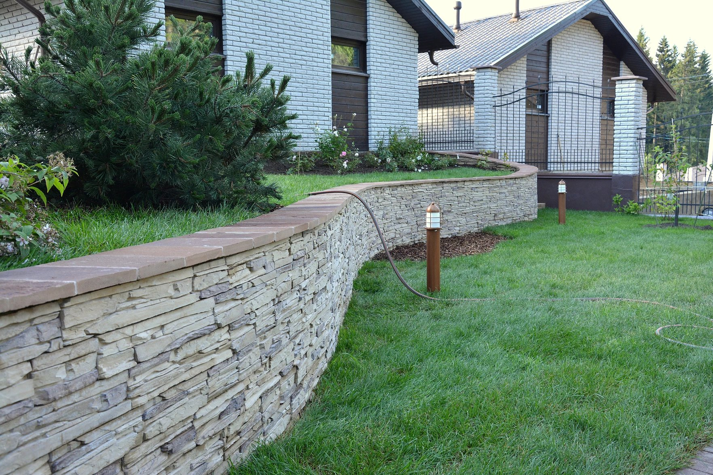

Проект СЕСТРОРЕЦК, 80 СОТОК, 2013
Были созданы
- Генеральный план – основной чертеж, на котором обозначены форма и границы участка, существующие и проектируемые строения, зеленые насаждения, дорожки, пруды и т. д.
- Разбивочный чертеж, необходимый для переноса ландшафтных объектов в натуру. На нем показаны размеры, проектируемые высоты, привязки к жестким точкам (существующие строения, заборы, вешки).
- Схема дренажей. Для этого чертежа рассчитывается схема дренажа и ливневого водоотвода, а также их местоположение на участке.
- Схема освещения – рассчитывается необходимое количество линий, подбираются светильники, определяется их местоположение, а также места расположения выключателей и розеток.
- Дендроплан – план посадок древесных растений и план цветников с ассортиментной ведомостью.
- Посадочный чертеж – разбивка посадочных мест деревьев и кустарников, разбивка цветников .

Грамотно спроектированный и хорошо реализованный ландшафтный дизайн способен кардинально изменить местность. Размер территории напрямую влияет на простор для полета фантазии владельца участка и ландшафтного дизайнера работающего вместе с ним. Большую территорию можно тщательнее проработать, выделить и оформить функциональные зоны — площадку для детей, зону для обедов на свежем воздухе, зону отдыха с бассейном и так далее. В то же время можно преобразить и небольшой участок земли, выбрав для него оптимальный стиль и обыграв уже имеющиеся сильные стороны.
СЕСТРОРЕЦК, 80 СОТОК, 2013
Грамотно спроектированный и хорошо реализованный ландшафтный дизайн способен кардинально изменить местность. Размер территории напрямую влияет на простор для полета фантазии владельца участка и ландшафтного дизайнера работающего вместе с ним. Большую территорию можно тщательнее проработать, выделить и оформить функциональные зоны — площадку для детей, зону для обедов на свежем воздухе, зону отдыха с бассейном и так далее. В то же время можно преобразить и небольшой участок земли, выбрав для него оптимальный стиль и обыграв уже имеющиеся сильные стороны.

СЕСТРОРЕЦК, 80 СОТОК, 2013
Грамотно спроектированный и хорошо реализованный ландшафтный дизайн способен кардинально изменить местность. Размер территории напрямую влияет на простор для полета фантазии владельца участка и ландшафтного дизайнера работающего вместе с ним. Большую территорию можно тщательнее проработать, выделить и оформить функциональные зоны — площадку для детей, зону для обедов на свежем воздухе, зону отдыха с бассейном и так далее. В то же время можно преобразить и небольшой участок земли, выбрав для него оптимальный стиль и обыграв уже имеющиеся сильные стороны.
